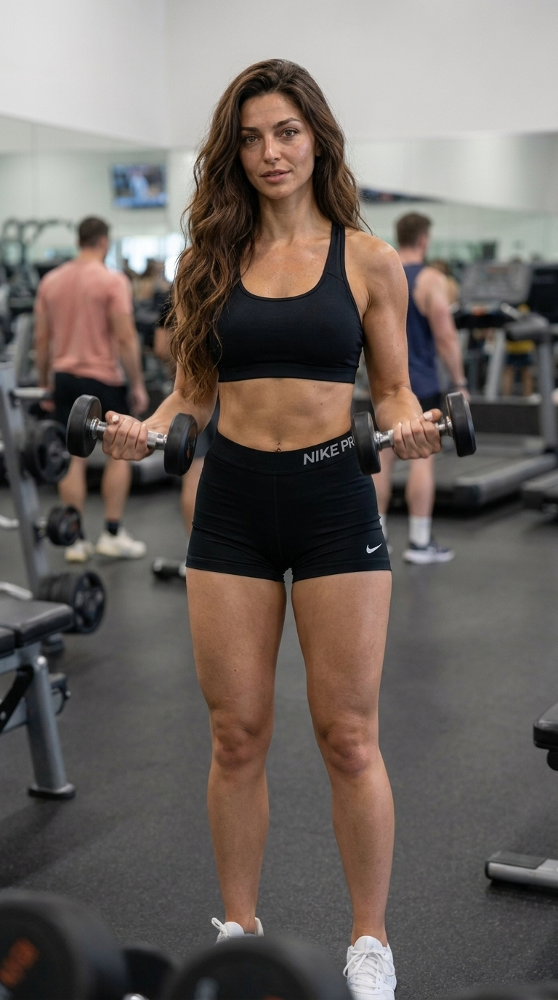

O peso mudou. Seu objetivo também.
Agora você quer olhar para a força, os músculos e a definição.
SUA PRÓXIMA ETAPA DEPOIS DO EMAGRECIMENTO
Um plano de treino, alimentação e acompanhamento para buscar mais força e definição depois do emagrecimento com Mounjaro ou outras canetas.
Quero conhecer meu próximo passo ↗Cuide do que você conquistou. Continue por você.

VOCÊ SE RECONHECE AQUI?
Se sentir melhor depois de perder peso e ainda querer mudar a relação com o próprio corpo podem fazer parte do mesmo momento.
Talvez o seu próximo objetivo seja desenvolver músculos, ganhar força ou organizar uma rotina que você consiga continuar.
Agora você quer olhar para a força, os músculos e a definição.
Ter clareza sobre o próximo passo ajuda a sair do “por onde eu começo?”.
Conectar treino e alimentação à rotina, com apoio ao longo do caminho.
O QUE VOCÊ VAI RECEBER
Treino, alimentação e acompanhamento reunidos para apoiar essa nova fase do seu corpo.
Orientações de exercícios com foco em ganhar força, desenvolver músculos e buscar mais definição.
Orientações para organizar a alimentação de acordo com a fase que você está vivendo e os seus objetivos.
Apoio ao longo da jornada para ajudar você a colocar as orientações em prática e manter uma rotina.

DA INTENÇÃO À ROTINA
Querer um corpo mais forte e definido é um novo objetivo. O plano reúne três frentes para ajudar você a dar esse próximo passo.
SEU PRÓXIMO PASSO
Uma experiência de treino, alimentação e acompanhamento para buscar mais força e definição depois do emagrecimento.
O começo de uma rotina que merece continuar.
Checkout em breve.
Para adultos que emagreceram com canetas e querem cuidar da próxima etapa.
ANTES DO PRÓXIMO PASSO
Para pessoas adultas que emagreceram usando Mounjaro ou outras canetas e querem orientação para continuar cuidando do corpo, com foco em treino, alimentação, força e definição.
Orientações de treino, orientações para organizar a alimentação e acompanhamento para apoiar a aplicação na rotina.
Os 30 dias são o período da experiência de orientação e acompanhamento para começar uma rotina. A evolução de força e definição acontece ao longo do processo e varia de pessoa para pessoa.
A proposta é apoiar a etapa seguinte ao emagrecimento: cuidar do corpo, desenvolver força e buscar mais definição. O foco da página não é uma nova meta de perda de peso.
CUIDE DE VOCÊ HOJE. CONTINUE POR VOCÊ AMANHÃ.
Conheça a proposta de treino, alimentação e acompanhamento
para essa nova fase.
Checkout em breve.